UrbanMind / Staff mobile
Bằng chứng chạy native trên Android
Ảnh chụp trực tiếp từ APK kiểm định cục bộ trên Pixel 5 emulator, Android 16 / API 36, 1080 × 2340, density 440. Dữ liệu là fixture cô lập.
Bộ nghiệm thu này giữ các trạng thái cuối của luồng Staff và các stress case native quan trọng: font hệ thống 200%, cửa sổ hẹp, chat với Gboard, account read-only, minh chứng NeedRework và hai kiểu thanh điều hướng Android. Ảnh dashboard cuối xác nhận năm tab cùng hitbox giãn đều toàn viewport.
Dashboard và system bars
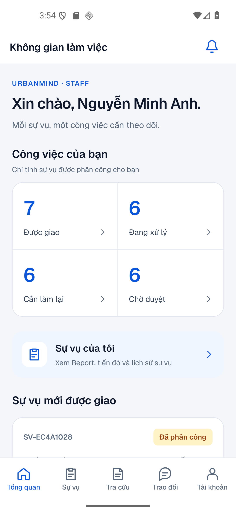
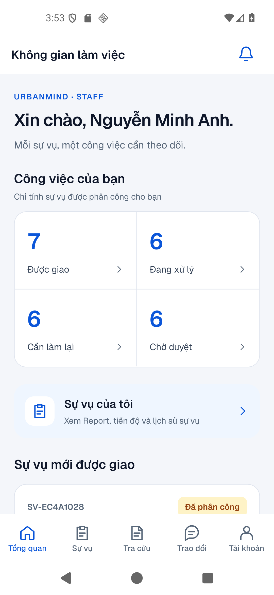
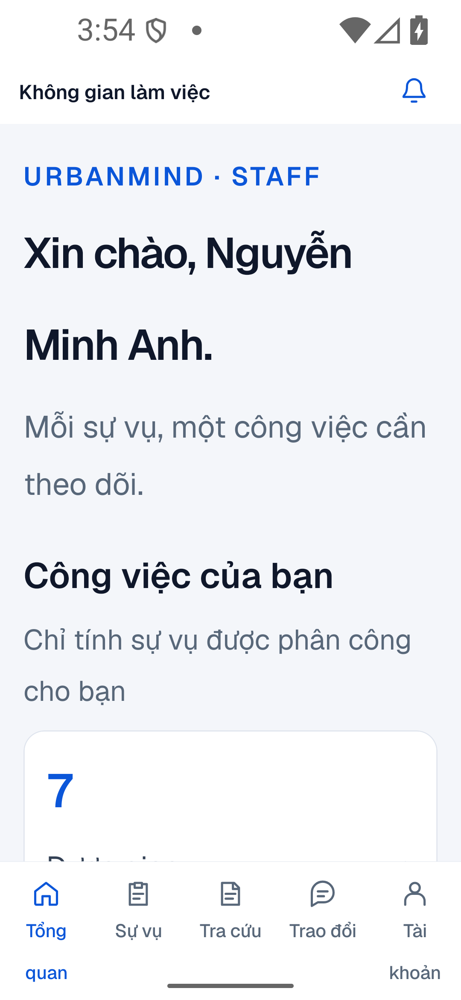
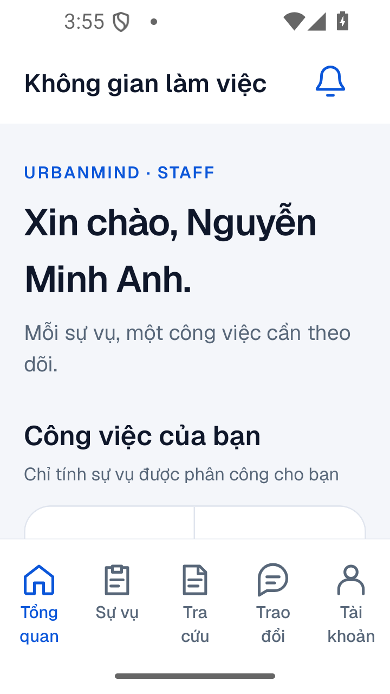
Trao đổi và bàn phím
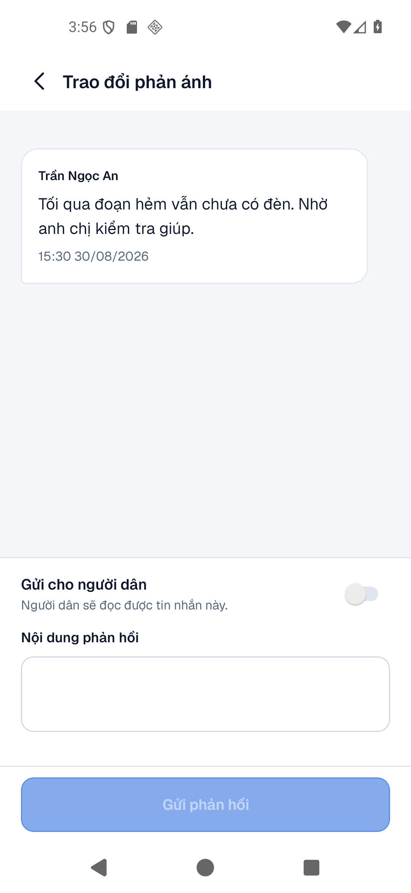
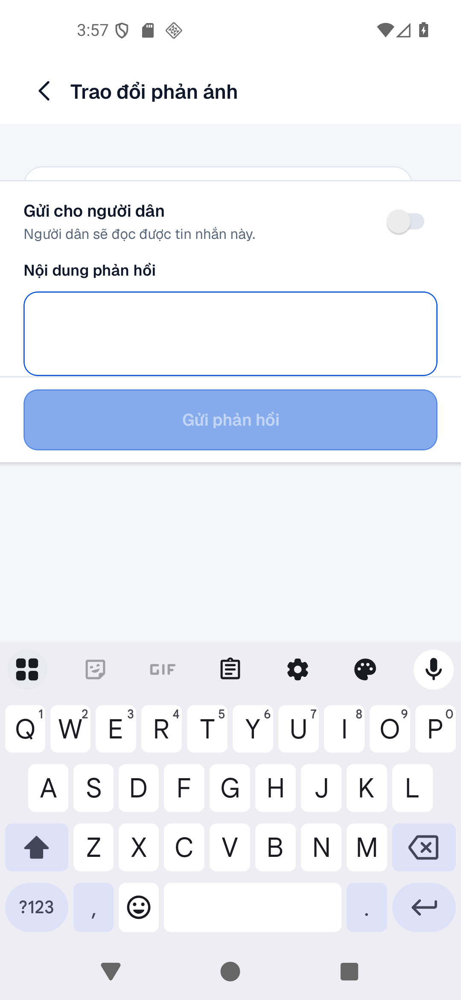
Tài khoản và minh chứng NeedRework
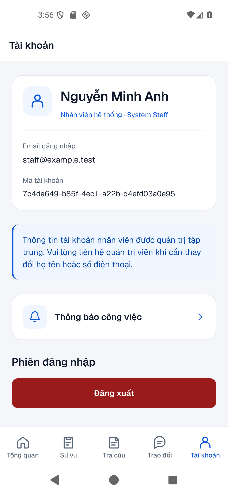
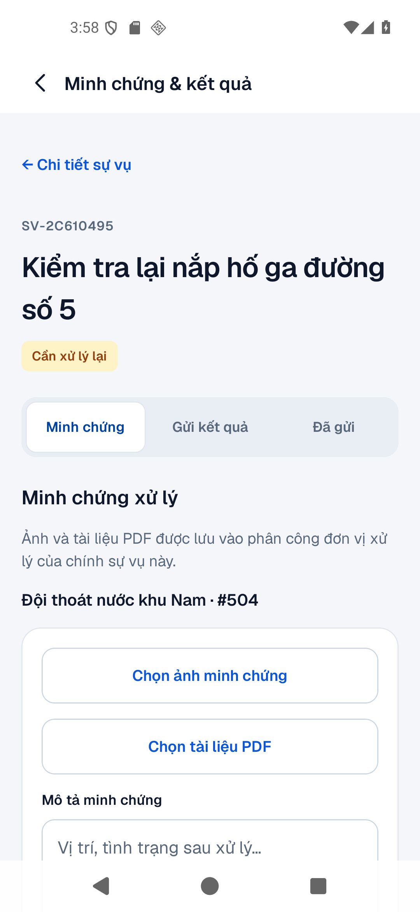
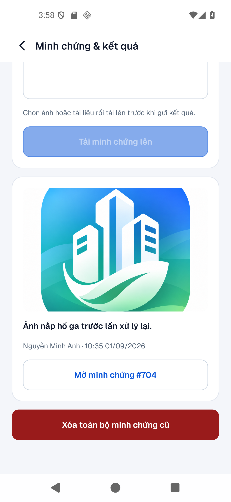
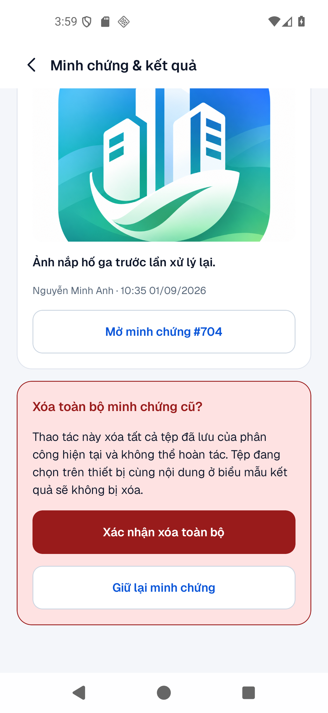
Bắt đầu xử lý sự vụ
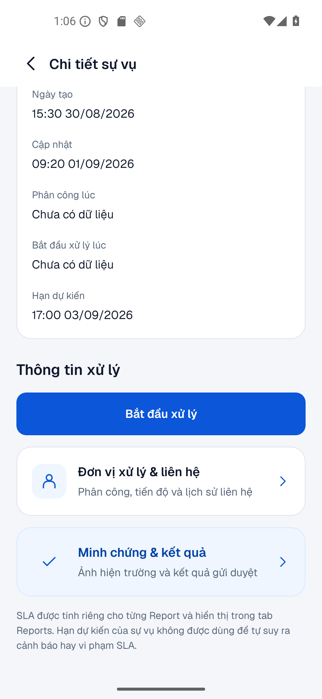
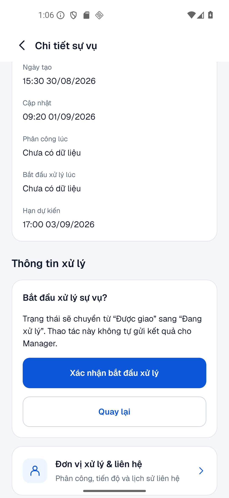
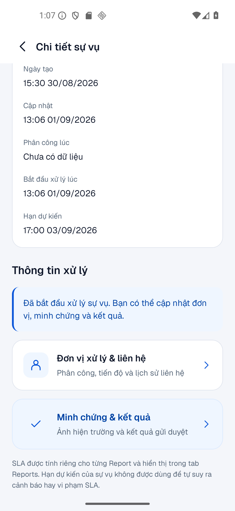
SLA theo từng Report
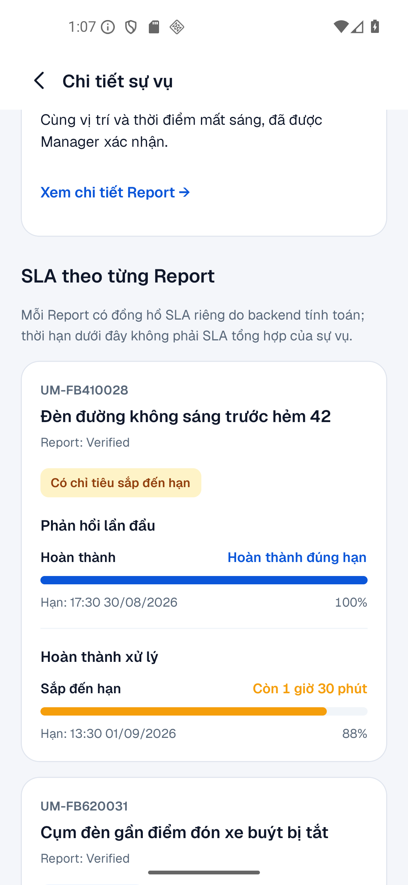
Gửi lại kết quả sau NeedRework
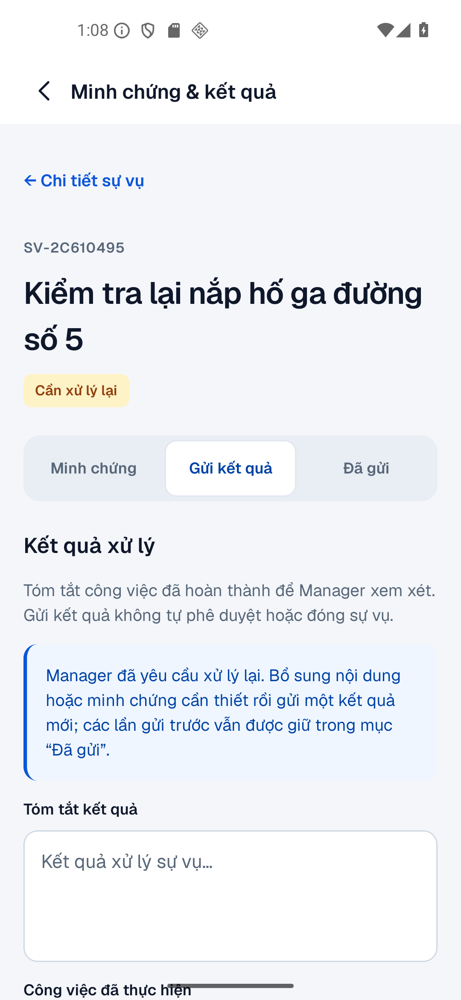
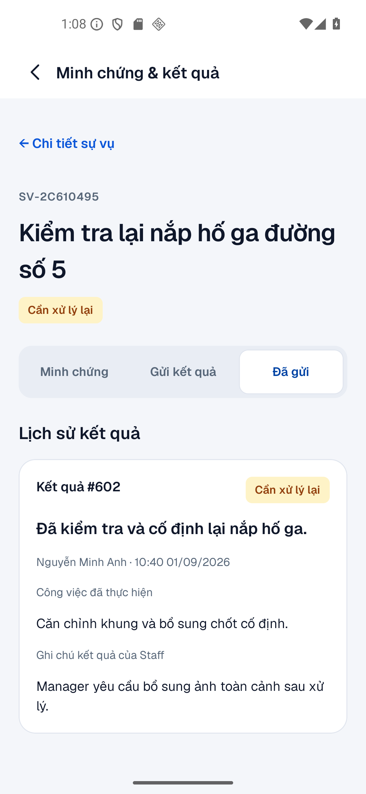
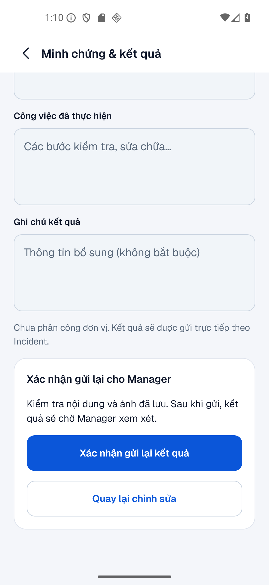
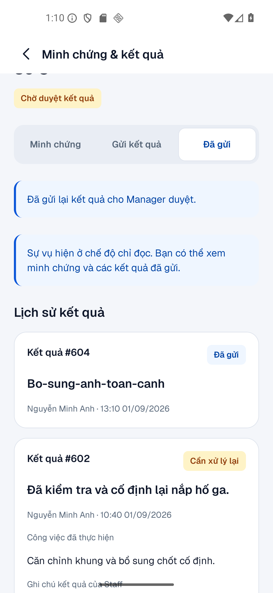